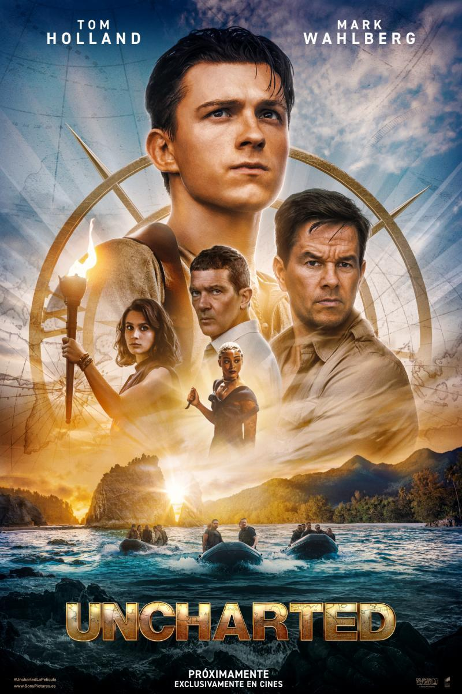

- Director: Jon Watts
- Reparto: Tom Holland, Zendaya, Benedict Cumberbatch, Alfred Molina, Tobey Maguire, Andrew Garfield, Willem Dafoe, Marisa Tomei, Jacob Batalon, Jon Favreau, Angourie Rice, Jamie Foxx, J.K. Simmons
- Duracion: 148 min.
- Nacionalidad: Estados Unidos
- Año: 2021
- Límite edad: +12
Spider-Man: No Way Home

| Sala | Horario |
|---|---|
| 13 | 18.30 |
| 13 | 22 |
Por primera vez en la historia cinematográfica de Spider-Man, nuestro héroe, vecino y amigo es desenmascarado, y por tanto, ya no es capaz de separar su vida normal de los enormes riesgos que conlleva ser un superhéroe. Cuando pide ayuda al Doctor Strange, los riesgos pasan a ser aún más peligrosos, obligándole a descubrir lo que realmente significa ser él. Secuela de 'Spider-Man: Far From Home'.

Uncharted

- Director: Ruben Fleischer
- Reparto: Tom Holland, Mark Wahlberg, Sophia Ali, Antonio Banderas, Tati Gabrielle, Steven Waddington, Patricia Meeden, Sarah Petrick, Pilou Asbæk, Pingi Moli, Tiernan Jones, Alana Boden, Rudy Pankow
- Duracion: 115 min.
- Nacionalidad: Estados Unidos
- Año: 2022
- Límite edad: +12
| Sala | Horario |
|---|---|
| 14 | 18.30 |
| 14 | 22 |
Basada en una de las series de videojuegos más vendidas y aclamadas por la crítica de todos los tiempos, "Uncharted" presenta a un joven, astuto y carismático, Nathan Drake (Tom Holland) en su primera aventura como cazatesoros con su ingenioso compañero Victor “Sully” Sullivan (Mark Wahlberg). En una aventura de acción que se extiende por todo el mundo, ambos se embarcan en una peligrosa búsqueda de “el mayor tesoro nunca antes encontrado” al tiempo que rastrean las claves que les podrían conducir al hermano de Nathan, perdido hace ya mucho tiempo.
The Batman

- Director: Matt Reeves
- Reparto: Robert Pattinson, Zöe Kravitz, Jeffrey Wright, John Turturro, Paul Dano, Colin Farrell, Andy Serkis, Peter Sarsgaard, Jayme Lawson, Con O'Neill, Barry Keoghan, Gil Perez-Abraham, Peter McDonald
- Duracion: 175 min.
- Nacionalidad: Estados Unidos
- Año: 2022
- Límite edad: +13
| Sala | Horario |
|---|---|
| 15 | 18.30 |
| 15 | 22 |
Después de dos años acechando por las calles de la ciudad como Batman (Robert Pattinson), e infundiendo miedo en las mentes perversas de los criminales, Bruce Wayne está sumido en las profundidades de las sombras de Gotham City. Este vigilante solitario cuenta con pocos aliados de confianza y eso le ha llevado a convertirse en la única encarnación de la venganza entre sus conciudadanos. Cuando un asesino apunta a la élite de Gotham con una serie de maquinaciones sádicas, un rastro de pistas crípticas lleva a Batman a realizar una investigación en el inframundo.